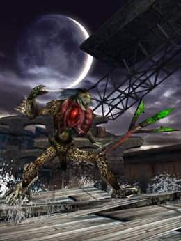
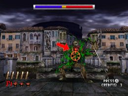
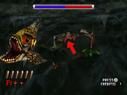
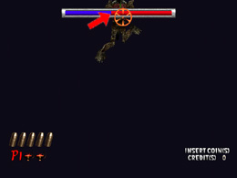

HOD2 HIEROPHANT
ボス攻略 HOD2

三叉の槍を携える巨大水棲ゾンビが「HIEROPHANT」だ。弱点は
硬い皮膚におおわれた心臓だ。
心臓以外の場所に撃った銃弾は全て弾かれてしまうので、注意しろ。
「HIEROPHANT」は接近して槍で攻撃をしかけてくるので、確実に心臓を撃つ
必要がある。開くタイミングを覚えて、連射するのではなく、数発ずつ
確実に狙っていこう。

体力を半分近くまで減らすと、「HIEROPHANT」は死魚を飛ばして
攻撃してくるぞ。死魚を全てさばくのは難しい。死魚の攻撃を少しでも早く
終わらせるために、この攻撃に移った直後から心臓を狙い撃ちして
ダメージを与えておくとよい。

飛んできた死魚は、集中して確実に撃ち落とすように。余裕が出てきたら、
その合間に心臓を狙え。
死魚の攻撃が終わっても油断は禁物だ。今度は大きくジャンプして
君をねらってくるぞ。最初は大きな動きに戸惑うかもしれないが、
ジャンプの頂点から落下を始めたあたりで、心臓を狙えば
撃墜できるだろう。

ちょうど心臓が見えない位置だが、迷わず連射するんだ。
「HIEROPHANT」が着地した後やダメージを受けた後も
心臓を撃てるタイミングがある。胸の状態に注意しろ。
ジャンプ攻撃は
・橋の上からジャンプする場合
・水中からジャンプする場合
の2通りがある。
橋の上からジャンプする場合は、飛ぶ前に心臓が露出する
タイミングがあるので、そこを狙って銃弾を撃ち込むんだ。
ルートによっては桟橋の上で対決することもあるだろう。
攻撃パターンや心臓が露出するタイミングは若干異なるが、
基本的な攻略方法は同じだ。
 RSS
RSS